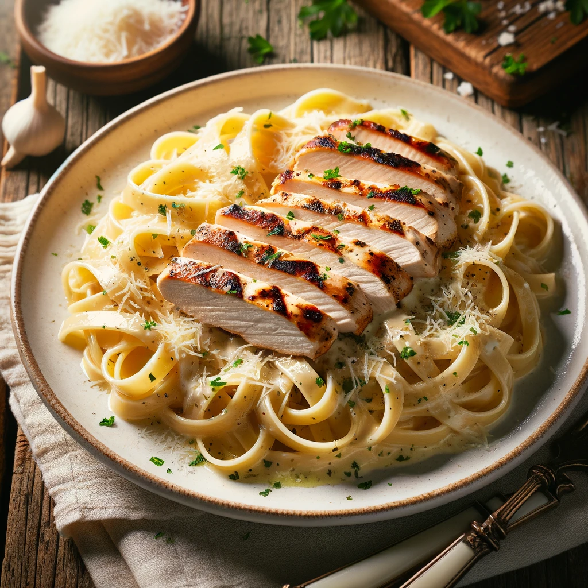

Chicken Alfredo Recipe

Servings: 4 | Prep Time: 15 mins | Cook Time: 30 mins | Total Time: 45 mins
This classic Chicken Alfredo is a creamy, flavorful, and easy-to-make dish perfect for a comforting meal. Featuring fettuccine pasta tossed in a homemade Alfredo sauce and topped with juicy, grilled chicken, it's a favorite that's sure to impress.
Ingredients
- 2 boneless, skinless chicken breasts
- 1 pound fettuccine pasta
- 1 tablespoon olive oil
- 2 tablespoons unsalted butter
- 3 cloves garlic, minced
- 1 cup heavy cream
- 1 cup freshly grated Parmesan cheese
- Salt and pepper to taste
- Fresh parsley, chopped (for garnish)
Steps
- Season the chicken breasts with salt and pepper, then grill until golden and cooked through. Let it rest before slicing.
- Cook the fettuccine according to the package instructions. Drain and set aside.
- In a large skillet, melt butter over medium heat. Add garlic and sauté until fragrant.
- Add heavy cream and bring to a simmer. Stir in Parmesan cheese until melted and the sauce is smooth.
- Toss the cooked pasta in the Alfredo sauce until well coated.
- Plate the pasta, top with sliced chicken, garnish with parsley, and serve immediately.